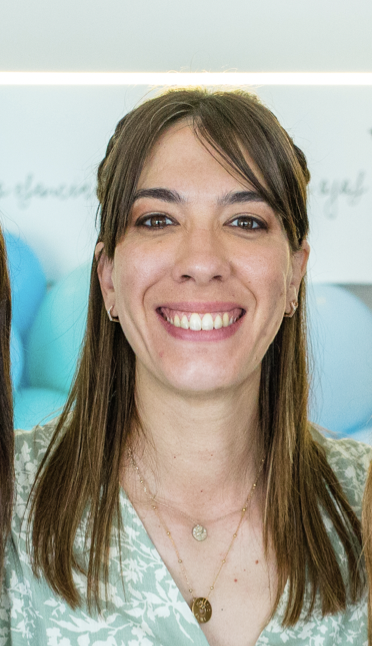

Claudia Korzeniewski

Summary
I enjoy a lot making teams successful. I consider myself an empathic person capable of leading diverse groups of work and generating a comfortable and friendly environment for the members of the team to feel at ease with the work we do together. I am also in a good mood most of the time and I am always making jokes since I think this helps us to build a relationship that enables us to work with freedom and enjoyment. I am an agile woman and I love being in a learning flow to try new things and improve the ones I'm already into. I'm not perfect but I'm just trying to do my best.
Education
- Computer Science, University of Buenos Aires, Argentina, Dec 2013
Work Experience
Senior Software Engineer, MURAL
Nov 2020 - Currently
- I have built autonomous, efficient and diverse work teams that have remained stable for the past 2 years, in constant growing and professional development, generating an excellent work environment.
- Implemented an Agile development methodology that improved collaboration and communication between teams.
- Led cross-functional collaboration between (Product, Design, Engineering) PDE teams resulting in an improved user experience
- Established a culture of transparency and trust that improved team morale and productivity
- Collaborated with the Product Manager and Design Lead to develop a 1-year product road-map, resulting in an 50% accessibility improvement and 20% of design components adoption
- Implemented a code review process that led to a relevant decrease in bugs reported by customers, improving overall product quality and speeding up the development process
- Mentored and coached engineers to help them reach their full potential and improve their performance
Courses
- Certified Agile Leadership Essentials for Team Leaders (CAL-E/T)
- Advanced Certified Scrum Master, Scrum Alliance
- Certified Scrum Product Owner, Scrum Alliance
- Management 3.0 , KNOWMENT
- Graphic Facilitation, Kleer
Skills
- Agile Methodologies: Scrum, Kanban, Scrumban,Safe, Lean
- Jira
- English Speaker: Upper Intermediate
Contact Me